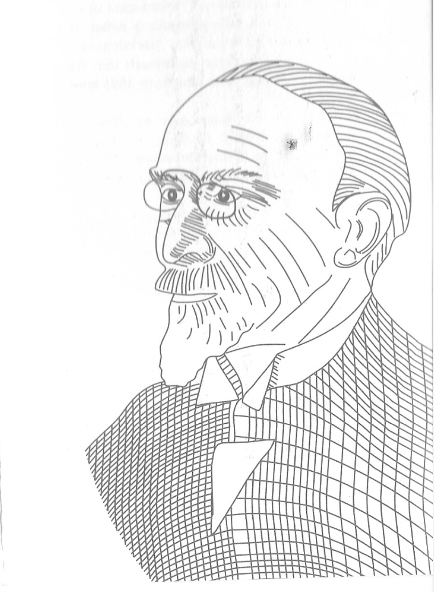

The scientific life, letters, and afterlife of Louis Lewin — pharmacologist, toxicologist, ethnobotanist, and one of modernity's earliest readers of intoxication.
A digital companion to the doctoral dissertation The Gifts of Louis Lewin: A Cross-Cultural History of a Life in Toxicology, Pharmacology, and Intoxication, Vanderbilt University, 2026.
Two voices frame this project. The first names the paradox of toxicology itself. The second remembers the man who made it his life's work.
"Alle Dinge sind Gift, und nichts ist ohne Gift; allein die Dosis macht, daß ein Ding kein Gift sei."
"All things are poison, and nothing is without poison; only the dose makes a thing not a poison."(Philippus Aureolus Theophrastus Bombastus von Hohenheim), Die dritte Defension, 1538
"In our time, people who live their lives in their own way and who are distinguished from others by their special character and the richness of their achievements are no longer common. Their disappearance leaves this world poorer. But only when they have disappeared does it become quite clear what they were. One could go on talking about them for hours. The many books and treatises of Lewin tell only about one sector of his life. Despite his long life, he died without having exhausted his potential."Richard Koch and Angela Rohr, obituary for Louis Lewin, "Louis Lewin. Der Gelehrte," Frankfurter Zeitung, January 24, 1930. Translation from the German.
A digital companion to a completed dissertation — and a standing archive in its own right.
This project draws on the Nachlass Louis Lewin at the Staatsbibliothek zu Berlin, supplementary collections in Berlin and Hamburg, and sustained archival work across German, French, English, and Russian materials. It presents Lewin's scientific correspondence, his writings on industrial poisoning and psychoactive plants, his family's dispersed papers, and the material traces of Jewish scientific life in Imperial and Weimar Berlin.
The site comprises four principal components: an exhibition interpreting Lewin's life through archival objects; a searchable directory of his five-hundred-odd correspondents; a map of the Berlin sites where he worked, worshipped, and was subsequently erased; and a map of his international correspondence network across forty-two countries.
In English, gifts signify benevolent offerings. In German, Gift is poison. This double meaning captures the central paradox of Lewin's work — and the shape of his archive.
Following Derrida, a pharmakon is a substance that is simultaneously remedy and poison, preservation and corruption. Lewin's Nachlass is itself a pharmakon-archive: a body of knowledge that preserves and enlightens even as it bears the scars of violence, exclusion, and loss. Reading the archive against that calibrated silence is one of this project's central commitments.
Five entry points into the material.
Portraits, poems, passenger manifests, Lewin's own handwriting, the five kingdoms of intoxication from Phantastica, and the material afterlife of the archive. A guided tour through the visual record.
A searchable directory of every correspondent in Lewin's Nachlass — physicians, chemists, ethnographers, missionaries, colonial officers, poets. Filter by country, category, profession, or decade.
The Grenadierstraße of his childhood. The Ziegelstraße laboratory. The Heidereutergasse synagogue. Weißensee cemetery. A geography of Jewish scientific life and its afterwards.
Lewin's correspondence moved through laboratories, clinics, colonial mines, and ethnographic expeditions on four continents. The world map plots that traffic.
On the dissertation, Clara Lewin and the keeping of the archive, and the people and institutions that have made this work possible. How to cite what you find here.
If you've used anything from this site in your own work.
Materials from the Nachlass Louis Lewin at the Staatsbibliothek zu Berlin should be cited with their original archival designation in addition to any reference to this site. Image rights for Nachlass materials remain with the SBB–PK.